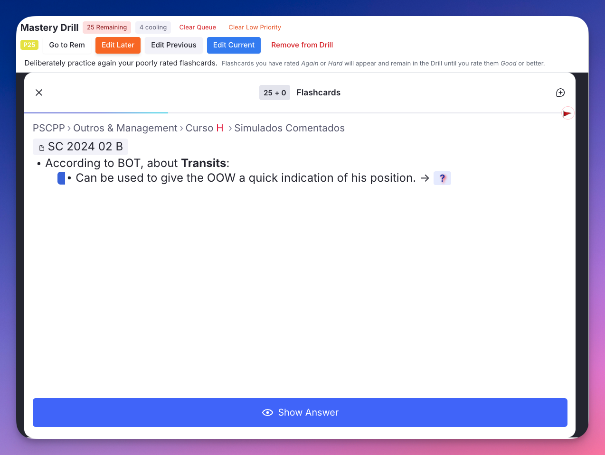
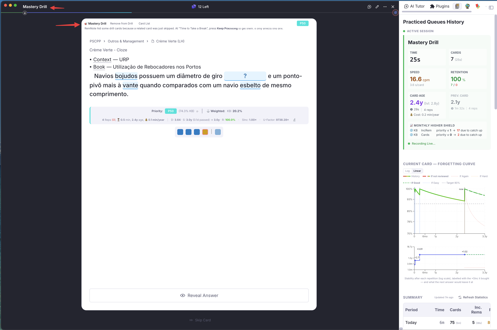
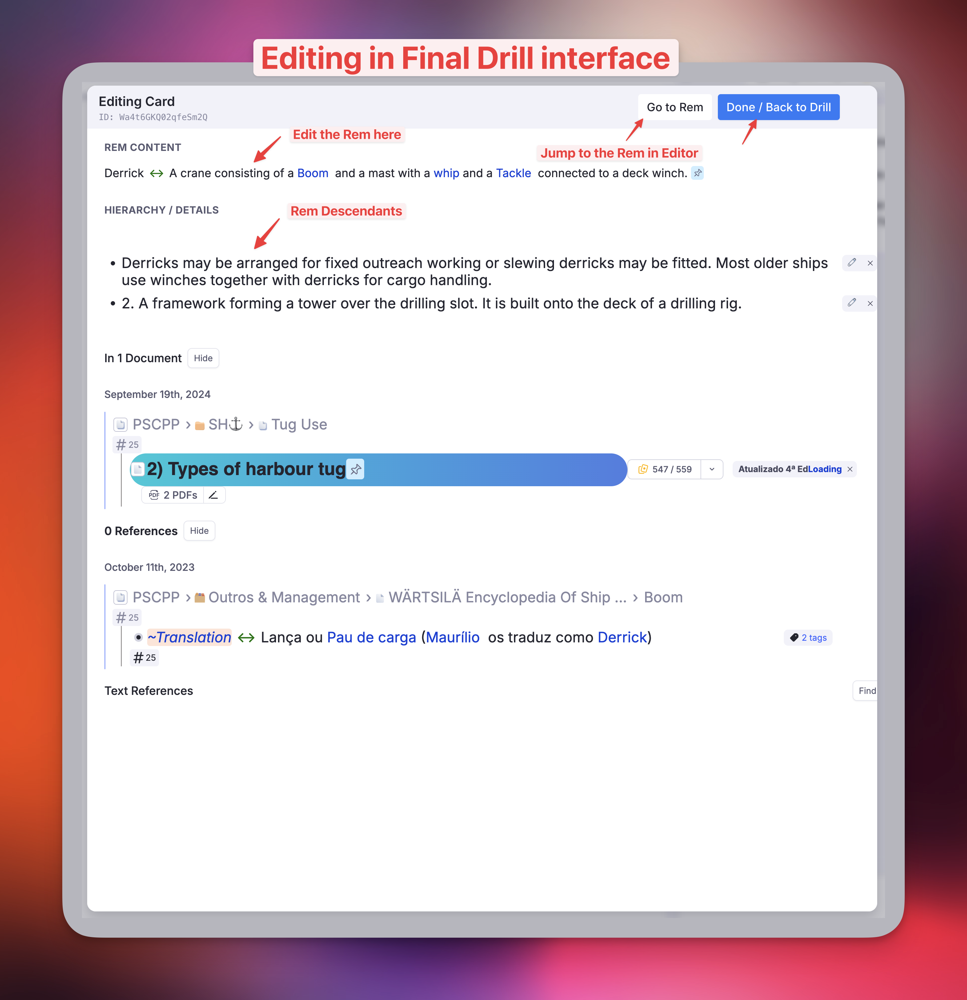
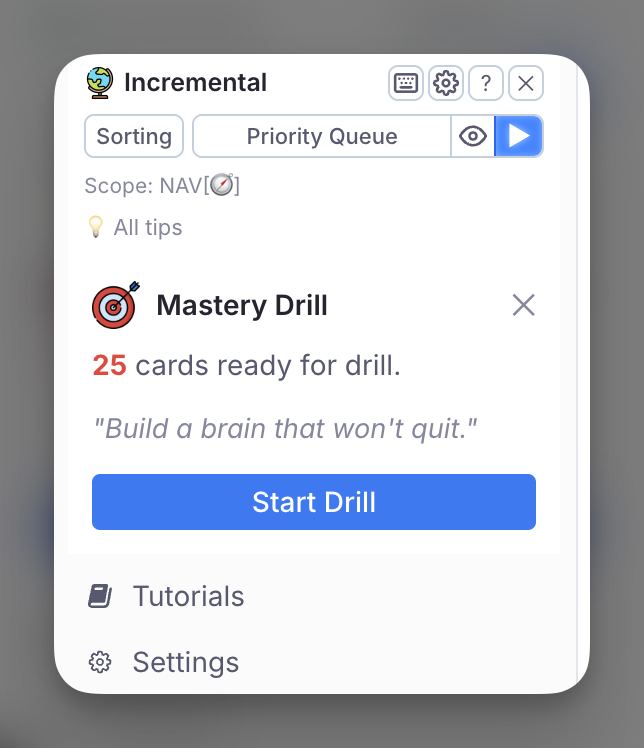

Mastery Drill¶
The drill bar — try it (a mock: nothing runs).
Inspired by SuperMemo's Final Drill, the Mastery Drill creates a focused sub-queue of cards you have recently struggled with, so you can target them deliberately until they stick.

Off by default — switch it on to use it
Turn on Enable Mastery Drill in the IE Settings popup (command is, under Mastery Drill) and reload RemNote.
While the drill is on, the plugin listens to every flashcard rating and keeps a list of the cards that need drilling, and it registers the drill popup, its command and the sidebar notification. Off, none of that runs — which is why it is opt-in rather than always present. Your flashcard and Practiced Queue history are unaffected either way.
Upgrading: this replaces the old Skip Mastery Drill switch. If you had turned that on, the drill stays off; the value is inverted and carried over for you.
How It Works¶
- Any flashcard you rate Forgot or Hard is automatically added to the Mastery Drill queue.
- Forgot cards usually already have a RemNote relearning step. If you complete it successfully (Good/Easy), the card is cleared from the drill. The drill ensures you actually complete the relearning step, especially useful when studying document-scoped queues rather than the global queue.
- Hard cards are the real differentiator. Drilling them is equivalent to reviewing slightly ahead of time — FSRS accounts for this and the resulting interval is nearly unchanged. The purpose is to confirm the card holds from long-term memory, which is why a Hard card waits longer before it is drilled.
- Unlike SuperMemo, these reviews are recorded in your repetition history.
- Cards stay in the drill until you rate them Good or Easy inside the Mastery Drill.
- A periodic notification widget appears in the Left Sidebar when ≥ 10 cards are pending, with a motivational phrase and a direct Start Drill button.
- If the Incremental RemNote panel is collapsed, the notification is not shown as a card — the panel's drill icon (a target wrapped in a return arrow) carries the drill instead, with the same count on a badge.
- Cards below the Priority Cap are not sent to the drill.
Known limitation — Card Clusters in the popup drill
Inside a cluster, RemNote reports only the cluster anchor to plugins: the visible sibling advances on screen, but the card identity the plugin receives stays on the first one. In ordinary queues and the regular-queue drill, the plugin sees each sibling and reads its rating back from the card's history, so every sibling you rate Forgot/Hard enters the drill and every one you rate Good/Easy leaves it.
The popup drill cannot see the siblings, with two consequences:
- Only the anchor's rating reaches the drill list. Ratings of siblings 2 and beyond change nothing there.
- The per-card actions target the anchor. On siblings 2 and beyond, Remove from Drill, Edit Later, Go to Rem, Edit Current and the priority badge act on the anchor rather than on the card you are looking at.
This is a limitation of what RemNote exposes to a popup, and it costs at most a stale entry in the drill list — never a wrong rating, and never a lost repetition. Everything outside clusters is unaffected.
Why Use It¶
Use the Mastery Drill to review only items you struggled with recently, ensuring you master them before they fall back into the scheduled queue. Working in a difficult-only mode puts your brain on an emergency alertness level — you approach repetitions differently when recall failure is expected, which is often enough to finally wrap your mind around harder material.
The Mastery Drill is optional. Not using it has no negative consequences: the scheduler will test you again at the next scheduled repetition and handle failures accordingly. But using it costs little and significantly increases success on subsequent repetitions.
Minimum Delay¶
Cards rated Again or Hard enter the drill queue immediately but wait before they appear in it, so you never re-review a card seconds after rating it. Rating a card Again or Hard again — inside the drill or in a regular queue — restarts the wait. While cards wait, a "X cooling" badge shows in the drill toolbar (hover it for when the first one is ready), and the Left Sidebar notification leaves them out of its count, so it only counts cards that are ready to drill.
- Again: the card waits the Minimum Delay (default 180 minutes), so a lapse is relearned while the failure is fresh — or until the relearning step its scheduler gave it is over, if that is longer. A card on a scheduler with a 1-day relearning step (an SM-2 scheduler, say) stays out of the drill until it is due.
- Hard: the card waits a share of the new interval the rating gave it (default 5%), never less than the Minimum Delay and never more than the Hard maximum (default 7 days).
Why Hard cards wait longer¶
A Hard rating is a pass: the scheduler has already sent the card out, maybe for a year or more. Drilled three hours later, the answer still comes from the review you just did, which says little about whether it will last that long. Drilled days later, recall has to come from long-term memory, so a pass confirms the card is ingrained, and a failure shows it is not — while there is still time to fix it.
| New interval after Hard | Wait before the drill (defaults) |
|---|---|
| 2 days | 3 hours (the Minimum Delay) |
| 10 days | 12 hours |
| 60 days | 3 days |
| 1 year | 7 days (the maximum) |
The share and the maximum are the settings Hard Cards: Share of the Interval and Hard Cards: Maximum Delay. Changing them also applies to cards already waiting. A share of 0 gives Hard cards the Minimum Delay. Cards that entered the drill before this feature (v1.0.173) keep the Minimum Delay.
Priority Cap¶
Mastery Drill Priority Cap (default 100) keeps low-priority material out of the drill. A card rated Again or Hard enters the drill only if its priority is the cap or a more important one (a number this low or lower); the rest are left to their normal schedule. At 100 every card goes. A card already in the drill stays until you rate it again; if it is then below the cap, it leaves instead of restarting its wait. To clear the low-priority cards already in the drill, use Clear → Low priority.
Where the Drill Runs¶
The drill runs in one of two places, chosen with Where the Drill Runs in the IE Settings popup (Mastery Drill):
| Regular queue (default) | Popup | |
|---|---|---|
| Where | RemNote's own Practice queue | Its own window, with an embedded queue |
| Widgets under the card | All of them: the card info bar and other plugins' widgets (context trees, repetition history…) | None: RemNote switches plugin widgets off in embedded queues |
| Other cards of a drill Rem | Skipped by the plugin, behind the Reveal Delay | Never shown |
| Tools | The queue tools, in the drill bar | The queue tools plus the per-card actions |
dri, the sidebar notification and the panel's drill icon follow the setting. The commands Mastery Drill (popup) and Mastery Drill (regular queue) start either one whatever it says.
The regular-queue drill¶

RemNote practises whole Rems, not a hand-picked set of cards. So each session creates a temporary Mastery Drill document holding the drill Rems, opens it in Practice All, and deletes it when you leave the queue. RemNote offers every card of those Rems, and the plugin skips the ones that are not ready drill cards.
- Reveal Delay (default 500 ms): each card stays hidden this long, then fades in, so a skipped card is not seen. Most skips take under 150 ms; one that comes right after a rating can take longer and show briefly. A longer delay hides more of them, but every card appears that much later.
- "Time to Take a Break": skipping a card counts as seeing it, and RemNote then hides the other cards of that Rem for an hour, sometimes including its drill card. When RemNote shows its "Time to Take a Break" screen for them, the drill presses Keep Practicing itself and a toast says how many drill cards it is continuing with. It affects only the drill session, not your other queues. If the press ever fails, the screen stays up with Keep Practicing highlighted and a note under the buttons: press it, or Esc.
- The drill bar, under the queue's top bar, has the same queue tools as the popup's toolbar, plus Edit Later for the card on screen or the previous one. The Card List and the clear views open in their own popup. The regular queue already lets you edit the card, open its Rem and set its priority.
- Ratings work as in any queue: Again/Hard keep the card in the drill and restart its minimum delay, Good/Easy take it out. The session is recorded as Mastery Drill in the Practiced Queues History, and with Auto-focus Queue Dashboard on, the dashboard opens in the right sidebar as for any queue (the popup drill never opens it).
- Card Cluster cards: RemNote tells plugins nothing when a cluster card is rated, so the drill reads the rating from the card's own history a moment after the next card appears (or after you leave the queue). A cluster card rated Good or Easy leaves the drill like any other, and Again/Hard restarts its delay. When the drill starts, it also drops any card whose last rating since it entered the drill was Good or Easy — which catches any rating that was missed, such as a cluster card rated in the popup. The drill's Remove from Drill acts on the sibling on screen.
Queue Management below applies to both drills; Editor Access and Keyboard Shortcuts describe the popup drill.
Queue Management¶
The left part of the drill toolbar — the whole drill bar in the regular queue — holds the tools for the drill as a whole, in captioned groups (try them in the demo at the top):
- Remaining / cooling: how many cards are ready now, and how many are still waiting. Click the count to open the Card List.
- Card → List: lists every card in the drill and whether RemNote can show it — see Card List. L opens it too in the popup.
- Card → Remove: takes the card on screen out of the drill without rating it.
- Edit Later → Current / Previous (in the popup, among the per-card groups at the right): asks for an optional note, tags the Rem with RemNote's Edit Later (the note goes in its Message) and takes the card out of the drill. Previous acts on the card you just rated and keeps its rating — handy when a card shows its flaws only once you see the answer, and you want to rate it first. Enter sets the note, Esc cancels.
- Clear → All: empties the drill to start fresh.
- Clear → Low priority: opens a distribution view of how many drill cards fall into each of 20 priority buckets (0–5, 6–10, …, 96–100). Set a threshold and remove every card above it in one click. To keep such cards out in the first place, set the Priority Cap.
- Clear → Old (amber, shown only when there are any): the cards ready to drill for longer than the Old Items Threshold (default 7 days), e.g. 14 > 7d. Time spent cooling does not count, so a Hard card that waited a week is not flagged the day it becomes ready. Hover it to read why stale cards may be better left to the scheduler; click it to remove them.
The clear views work from the keyboard: ←/→ choose a button, Enter runs it, Esc goes back. In Clear Low Priority, ↑/↓ move the threshold by 5.
Card List¶
The drill toolbar counts a card as Remaining from its id alone, but RemNote only shows cards it can still practise. A card that was deleted, or switched off, stays in the count and never appears — the toolbar says 1 Remaining while the queue says You've finished practicing all your cards!. List Cards shows what is actually in the drill.
The list opens under the toolbar, in place of the queue. The queue is only hidden, so ← Back (or Esc) returns to the same drill session.
Each row shows the card's text, its type (e.g. Cloze (…), Forward Card), where the Rem sits, its priority, when it entered the drill, the time left if it is still cooling, and its last rating. A status tag says whether RemNote will show it; hover the tag for what to do about it.
| Status | Meaning |
|---|---|
| OK | RemNote will show the card. |
| Last rated Good | The last rating was Good or Easy, so the card should already have left the drill. |
| Paused deck | The card sits inside a paused deck. |
| Card deleted | The card no longer exists — its Rem was deleted, or the cloze or back side it came from was edited away. |
| Rem deleted | The card record survives but its Rem is gone. |
| Disabled by ancestor | An ancestor carries Disable Descendant Cards. |
| In a table | The Rem is in a table, where RemNote ships cards switched off. |
| Cards off on Rem | Enable Cards is off on the Rem. |
| Direction off | The Rem's flashcard direction no longer includes this card's direction. |
| Cloze/back removed | The cloze or back side the card was made from is no longer in the Rem. |
| Card switched off | The card was switched off on its own; open the Rem and run /Enable All Cloze Cards, or click the greyed cloze → Enable this card. |
| Not surfaced | RemNote does not show the card, and no Rem-level cause explains it. |
Cards RemNote cannot show are listed first, then the old ones (with an amber Old · ready 12 days badge), then the cards that are due now, then the ones still cooling. Remove N unplayable takes every card RemNote cannot show out at once. Per row, Go to Rem opens the Rem (closing the drill), ↗ opens it in a browser tab and keeps the list open, and Remove takes the card out of the drill.
Filtering the list¶
Under the header, four chips split the drill into groups, each with its count:
| Chip | Cards |
|---|---|
| Due now | Past their cooling time, and RemNote can show them. The drill should be serving these. |
| Cooling | Resting after a recent rating; the drill holds them back until the time is up. |
| Unplayable | RemNote will never show them, cooling or not. |
| Old | Ready to drill for longer than the Old Items Threshold: the cards Clear → Old removes. |
Click a chip (or press 1, 2, 3, 4) to hide or show its group. To find a card that is due but never came up in the drill, turn off Cooling and Unplayable: what remains is everything the drill should be showing you now. To review the old cards before clearing them, leave only Old on.
| Key | Action |
|---|---|
| ↑ / ↓ | Choose a card |
| Enter | Go to the chosen card's Rem |
| 1 / 2 / 3 / 4 | Show or hide Due now / Cooling / Unplayable / Old |
| Delete | Remove the chosen card from the drill |
| Shift+Delete | Remove every card RemNote cannot show |
| Esc | Back to the drill |
Editor Access¶
In the popup, the right end of the drill toolbar holds per-card groups for the card on screen (the regular queue offers these natively):
- Rem → priority badge: the current card's priority. Click it to open an inline priority editor directly in the toolbar — no popup needed.
- Rem → Go to Rem: opens the Rem in RemNote's native Editor (closes the drill popup; a resume trigger re-opens it on return).
- Edit Later → Current / Previous: prompts for an optional note, marks the Rem of the card on screen (Current) or of the card you just rated (Previous, which keeps its rating) with the Edit Later powerup, storing the note in the Message slot, and removes the card from the drill queue.
- Edit → Current: opens an inline editor for the card on screen.
- Edit → Previous: opens an inline editor for the card you just rated — useful for quick corrections after seeing the answer.

Keyboard Shortcuts¶
The Mastery Drill popup supports the standard RemNote queue keyboard shortcuts:
| Key | Action |
|---|---|
| 1 | Again (if answer revealed) — or reveal answer first |
| 2 | Hard (if answer revealed) — or reveal answer first |
| 3 / Space | Good (if answer revealed) — or reveal answer first |
| 4 | Easy (if answer revealed) — or reveal answer first |
| ← | Go back to the previous card |
| → | Skip the current card (can be undone with ←) |
| L | Open the Card List |
If the answer has not yet been revealed, the first rating keystroke reveals it. The second keystroke records the rating. Shortcuts are suppressed when focus is on a text input or editable field.
How to Use¶
- Rate any flashcard Forgot or Hard during your regular queue.
- A notification will appear periodically in the Left Sidebar when the queue accumulates ≥ 10 pending cards.
- Open the drill using the
Mastery Drillcommand in the Command Palette (Quick Code:dri), or click Start Drill in the notification widget. It opens in the popup or the regular queue, per Where the Drill Runs. - The queue clears as you master cards (rate them Good or Easy).

Settings¶
| Setting | Default | Description |
|---|---|---|
Enable Mastery Drill |
Off | Master switch for all Mastery Drill features: the drill, its sidebar notification and commands, and the tracking of Again/Hard cards. Flashcard and Practiced Queue history are not affected. Requires a reload. |
Old Items Threshold |
7 days | Number of days a card can stay ready to drill before it is flagged as stale (time spent cooling does not count). Hover the warning badge in the toolbar for an explanation. |
Mastery Drill Minimum Delay |
180 min | A card rated Again or Hard will not appear in the drill until at least this many minutes have passed. For Again, the wait is this or the scheduler's relearning step, whichever is longer; the floor for Hard. See Minimum Delay. |
Hard Cards: Share of the Interval |
5% | A card rated Hard waits this share of its new interval before returning to the drill. 0 gives Hard cards the Minimum Delay. See Why Hard cards wait longer. |
Hard Cards: Maximum Delay |
7 days | The longest a card rated Hard waits, however long its interval. |
Mastery Drill Priority Cap |
100 | Only cards with this priority or a more important one enter the drill; 100 sends every card. See Priority Cap. |
Disable Mastery Drill Notification |
Off | Hides the periodic Left Sidebar notification widget. The notification only counts cards that have passed the minimum delay and are genuinely ready to drill. |
Where the Drill Runs |
Regular queue | Regular queue (RemNote's own queue, with every plugin widget) or Popup (embedded queue). See Where the Drill Runs. |
Reveal Delay (regular-queue drill) |
500 ms | How long each card stays hidden before it fades in during a regular-queue drill, so skipped cards are not seen. 0 turns it off. |
📖 See Plugin Settings Reference for the full settings list.
Commands¶
| Command | Quick Code | Description |
|---|---|---|
Mastery Drill |
dri |
Opens the Mastery Drill, in the popup or the regular queue per Where the Drill Runs. |
Mastery Drill (popup) |
— | Opens the drill in the popup, whatever the setting says. |
Mastery Drill (regular queue) |
— | Opens the drill in RemNote's own queue, whatever the setting says. |
📖 See Plugin Commands Reference for the full command list.